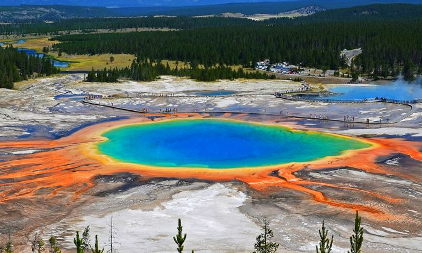
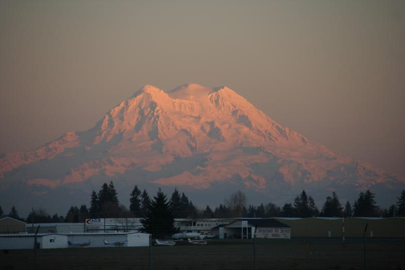
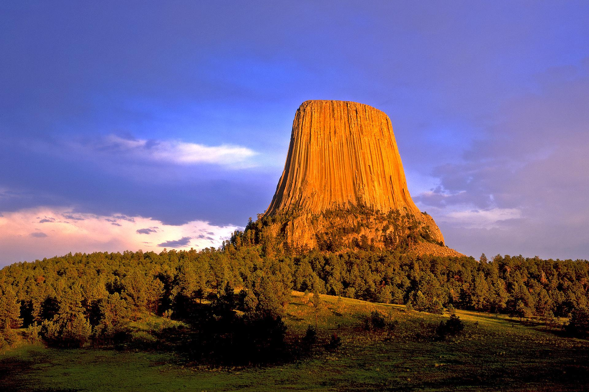
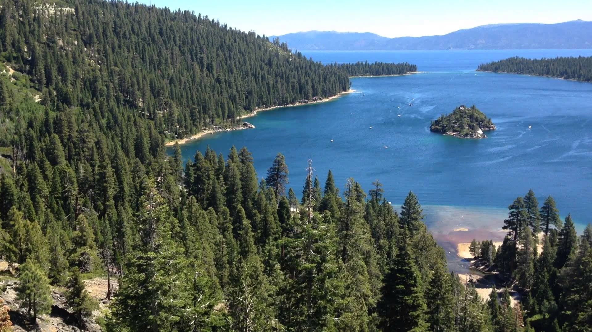

<!DOCTYPE html>
<html>
    <head>
        <title>Lab 2</title>

        <link rel="stylesheet" href="https://unpkg.com/leaflet@1.3.4/dist/leaflet.css"
        integrity="sha512-puBpdR0798OZvTTbP4A8Ix/l+A4dHDD0DGqYW6RQ+9jxkRFclaxxQb/SJAWZfWAkuyeQUytO7+7N4QKrDh+drA=="
        crossorigin=""/>

        <script src="https://unpkg.com/leaflet@1.3.4/dist/leaflet.js"
        integrity="sha512-nMMmRyTVoLYqjP9hrbed9S+FzjZHW5gY1TWCHA5ckwXZBadntCNs8kEqAWdrb9O7rxbCaA4lKTIWjDXZxflOcA=="
        crossorigin=""></script>

    </head>

    <body>
        <div id="map" style="height: 500px"></div>

        <script type="text/javascript">

          var map = L.map('map', {
              center: [38.16, -96.96],
              zoom: 4
          });

          L.tileLayer('http://b.tile.openstreetmap.fr/hot/{z}/{x}/{y}.png', {
               attribution: '@ <a href="https://www.openstreetmap.org/copyright">OpenStreetMap</a> contributors',
               maxZoom: 5,
               minZoom: 4
            }).addTo(map);
            
            var peaksIcon = L.icon({
    iconUrl: 'peaks.png', // url that links to the icon image file
    iconSize:     [38, 38], // size of the icon image in pixels
    iconAnchor:   [19, 19], // the top left corner of the icon will be aligned so that this point is at the marker's geographical location
    popupAnchor:  [0, -10] // point from which the popup should open, relative to the iconAnchor
});
    
           var marker1 = L.marker([44.42,-110.58], {icon: peaksIcon}).addTo(map);
            var marker2 = L.marker([46.86,-121.71], {icon: peaksIcon}).addTo(map); 
            var marker3 = L.marker([44.59,-104.71], {icon: peaksIcon}).addTo(map);
            var marker4 = L.marker([39.12,-120.55], {icon: peaksIcon}).addTo(map);
            
            var pic1 = '';
            var pic2 = '';
            var pic3 = '';
            var pic4 = '';

            
            marker1.bindPopup('<p style="color:orange; font-weight:italic"> Yellowstone National Park </p>' + pic1);
            marker2.bindPopup('<p style="color:Green; font-weight:italic"> Mount Rainier National Park</p>' + pic2);
            marker3.bindPopup('<p style="color:brown; font-weight:italic"> Devils Tower National Monument </p>' + pic3);
            marker4.bindPopup('<p style="color:blue; font-weight:bold"> Tahoe National Forest, Lake Tahoe </p>' + pic4);
            
        </script>
   </body>
</html>


